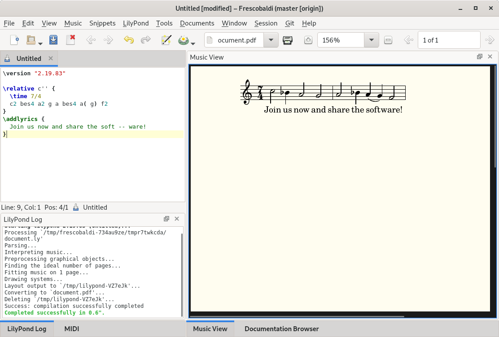

First steps
The default screen of Frescobaldi shows a text document on the left and an empty Music View window on the right.
Now, in the text view, enter some LilyPond code, like this:
\relative c'' {
\time 7/4
c2 bes4 a2 g a bes4 a( g) f2
}
\addlyrics {
Join us now and share the soft -- ware!
}
Then click the Lily toolbar button or press {key_engrave}. LilyPond will start to processes your file and the PDF will be displayed in the Music View on the right. If LilyPond encounters any errors or warnings they will be displayed in the LilyPond Log at the bottom of the screen.

The Music View has many possibilities:
-
Hovering over notes and other music objects will highlight them in the text on the left window; clicking on them will place a cursor to the left of the object also in the left window.
-
Use the Ctrl key and your mouse wheel to zoom in and out. Zooming will center around the mouse pointer.
-
Ctrl-left-click-and-hold the mouse to magnify a small section of the Music View without zooming in the whole view.
-
Selecting text in the main text window will highlight corresponding notes in the Music View; press {key_jump} to explicitly center and highlight a note or other objects in the Music View.
-
Shift-drag a selection and then press {key_copy_image} or {menu_copy_image} to copy the selected music as a raster image to the clipboard, a file or another application.
When your music score is complete, run LilyPond once more but with clickable notes turned off: menu {menu_engrave}. This significantly reduces the size of the PDF.
If LilyPond does not start at all, check if you have installed LilyPond correctly and that the lilypond command is in your system's PATH environment variable. If needed, provide the exact path to your LilyPond executable under {menu_preferences_lilypond}.
If LilyPond encounters any warnings or errors in your document they will show up in the LilyPond Log window at the bottom of the screen. Frescobaldi will then highlight these lines in the text view where the errors are. Clicking the error in the Log Window or pressing {key_error} immediately brings the text cursor to the offending line in your text view. Pressing {key_error} again will move to the next error message, and so on. LilyPond will remove any previous error line highlights the next time it is run but you can also remove any error line markings manually with the option {menu_clear_error_marks}.